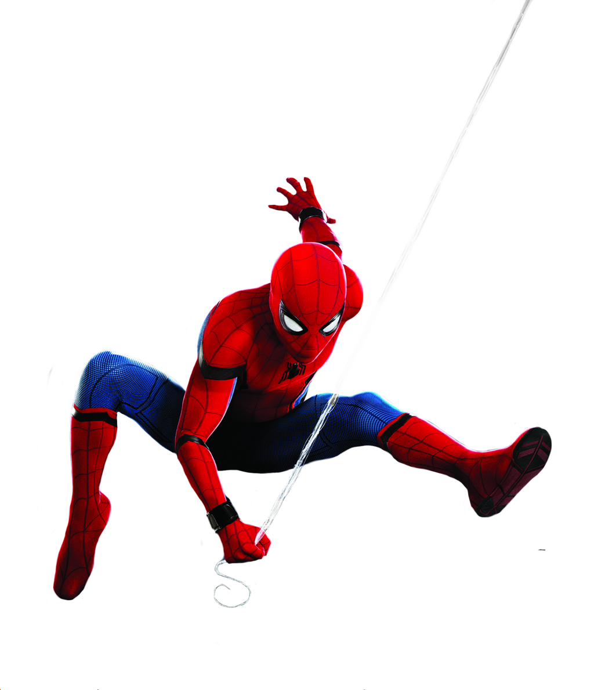

<!DOCTYPE html>
<html lang="en">
<head>
    <meta charset="UTF-8">
    <meta http-equiv="X-UA-Compatible" content="IE=edge">
    <meta name="viewport" content="width=device-width, initial-scale=1.0">
    <title>kino</title>
    <link rel="icon" href="favicon.ico">
    <link rel="shortcut icon" href="favicon.ico" type="image">
    <link rel="stylesheet" href="style.css">
    <link href="https:fonts.googleapis.com/css?family=Roboto:400,900&subset=latin-ext" rel="stylesheet">
</html>
<body>
    <div id="contanier">
        <header>
            
        </header>

        <nav>
            <a class="menu" href="glowny.html">główny</a>
            <a class="menu" href="cennik.html">cennik</a>
            <a class="menu" href="kontakt.html">kontakt</a>
            <a class="menu" href="terminarz.html">terminarz</a>
            <a class="menu" href="informacje.html">informacje</a>
            <a class="menu" href="onas.html">O nas</a>
        </nav>

        <section>
            <article>
                <h1>informacje</h1>
                <span style="font-size: xx-large"><strong>====Najnowsze produkcje====</span>
                <p><centre></centre></p>
            </article>
            <iframe width="560" height="550" src="https://www.youtube.com/embed/JfVOs4VSpmA" title="YouTube video player" frameborder="0" allow="accelerometer; autoplay; clipboard-write; encrypted-media; gyroscope; picture-in-picture" allowfullscreen></iframe>
        <p><font size="3"><strong>Spider-Man: Bez drogi do domu – amerykański fantastycznonaukowy film akcji na podstawie serii komiksów o superbohaterze o tym samym pseudonimie wydawnictwa Marvel Comics. Za reżyserię odpowiadał Jon Watts na podstawie scenariusza Chrisa McKenny i Erika Sommersa.</strong></font></p>
        <a href="https://www.google.com/search?client=opera-gx&q=spiderman+no+way+home&sourceid=opera&ie=UTF-8&oe=UTF-8"><strong>źródło</a>    
            <iframe width="560" height="500" src="https://www.youtube.com/embed/6x8SBOeoEeM" title="YouTube video player" frameborder="0" allow="accelerometer; autoplay; clipboard-write; encrypted-media; gyroscope; picture-in-picture" allowfullscreen></iframe>
            <p><font size="3"><strong>Sonic the Hedgehog 2 to przygodowy film akcji z 2022 roku oparty na serii gier wideo wydanej przez firmę Sega. Jest to kontynuacja Sonic the Hedgehog, wyreżyserowana przez Jeffa Fowlera i napisana przez Pat Casey, Josha Millera i Johna Whittingtona.</strong></font></p>
            <a href="https://www.google.com/search?q=sonic&client=opera-gx&bih=718&biw=1417&hl=pl&sxsrf=APq-WBthOOkaWqOIIjX8mw_iOZlS9gwUDQ%3A1650969446222&ei=ZstnYv6UDeyIrwSQjoKYCg&gs_ssp=eJzj4tVP1zc0TCtPNjKuSMk1YPRiLc7Py0wGAEtLBsk&oq=sonik&gs_lcp=Cgxnd3Mtd2l6LXNlcnAQARgMMgcIABBHELADMgcIABBHELADMgcIABBHELADMgcIABBHELADMgcIABBHELADMgcIABBHELADMgcIABBHELADMgcIABBHELADMgcIABCwAxBDMgcIABCwAxBDMgcIABCwAxBDMgcIABCwAxBDMg8ILhDUAhDIAxCwAxBDGAEyDAguEMgDELADEEMYATIPCC4Q1AIQyAMQsAMQQxgBMg8ILhDUAhDIAxCwAxBDGAEyDwguENQCEMgDELADEEMYATIMCC4QyAMQsAMQQxgBMgwILhDIAxCwAxBDGAEyDAguEMgDELADEEMYAUoECEEYAEoECEYYAVAAWABg0xhoAXABeACAAQCIAQCSAQCYAQDIARTAAQHaAQYIARABGAg&sclient=gws-wiz-serp"><strong>źródło</a>
            <iframe width="560" height="500" src="https://www.youtube.com/embed/1xy8o-7UsW8" title="YouTube video player" frameborder="0" allow="accelerometer; autoplay; clipboard-write; encrypted-media; gyroscope; picture-in-picture" allowfullscreen></iframe>
            <p><font size="3"><strong>Uncharted – amerykański film przygodowy w reżyserii Rubena Fleischera, którego premiera odbyła się 18 lutego 2022 roku. W rolach głównych wystąpili Tom Holland, Mark Wahlberg, Sophia Ali, Tati Gabrielle oraz Antonio Banderas. Film bazuje na serii gier komputerowych Uncharted wyprodukowanych przez studio Naughty Dog.</strong></font></p>
            <a href="https://www.google.com/search?client=opera-gx&q=uncharted%5D&sourceid=opera&ie=UTF-8&oe=UTF-8"><strong>źródło</a>
            <iframe width="560" height="500" src="https://www.youtube.com/embed/QXPdhyckQMs" title="YouTube video player" frameborder="0" allow="accelerometer; autoplay; clipboard-write; encrypted-media; gyroscope; picture-in-picture" allowfullscreen></iframe>
            <p><font size="3"><strong>Tłumaczenie z języka angielskiego-Pies to amerykańska komedia drogi z 2022 roku, wyreżyserowana przez Channinga Tatuma i Reida Carolina, obaj debiutujący jako reżyserzy pełnometrażowi. W filmie Tatum występuje w roli komandosa, który musi eskortować psa poległego dowódcy na pogrzeb.</strong></font></p>
            <a href="https://www.google.com/search?q=PIES+film+2022&client=opera-gx&hs=p1M&sxsrf=APq-WBt9HcwGl5JU95q4v3-v_E3_vZ7g_w%3A1650971534086&ei=jtNnYpvvBOGlrgTRrozgCA&ved=0ahUKEwib7sqezLH3AhXhkosKHVEXA4wQ4dUDCA0&uact=5&oq=PIES+film+2022&gs_lcp=Cgxnd3Mtd2l6LXNlcnAQAzIFCC4QgAQyCAgAEIAEELEDMgUIABCABDIFCAAQgAQyBQgAEIAEMgUIABCABDIFCAAQgAQyBQgAEIAEMgUIABCABDIFCAAQgAQ6BwgAELEDEEM6BAguEEM6BAgAEEM6BwguELEDEEM6CgguELEDENQCEEM6BwguENQCEEM6CwguEIAEELEDEIMBOggILhCABBCxA0oECEEYAEoECEYYAFCIBVjYFGCHF2gBcAF4AIABxQGIAdYLkgEEMC4xMJgBAKABAcABAQ&sclient=gws-wiz-serp"><strong>źródło</a>
        </section>

        <footer>
            <p>źródło YouTube.com</p>
        </footer>
    </body>
</body>
</html>